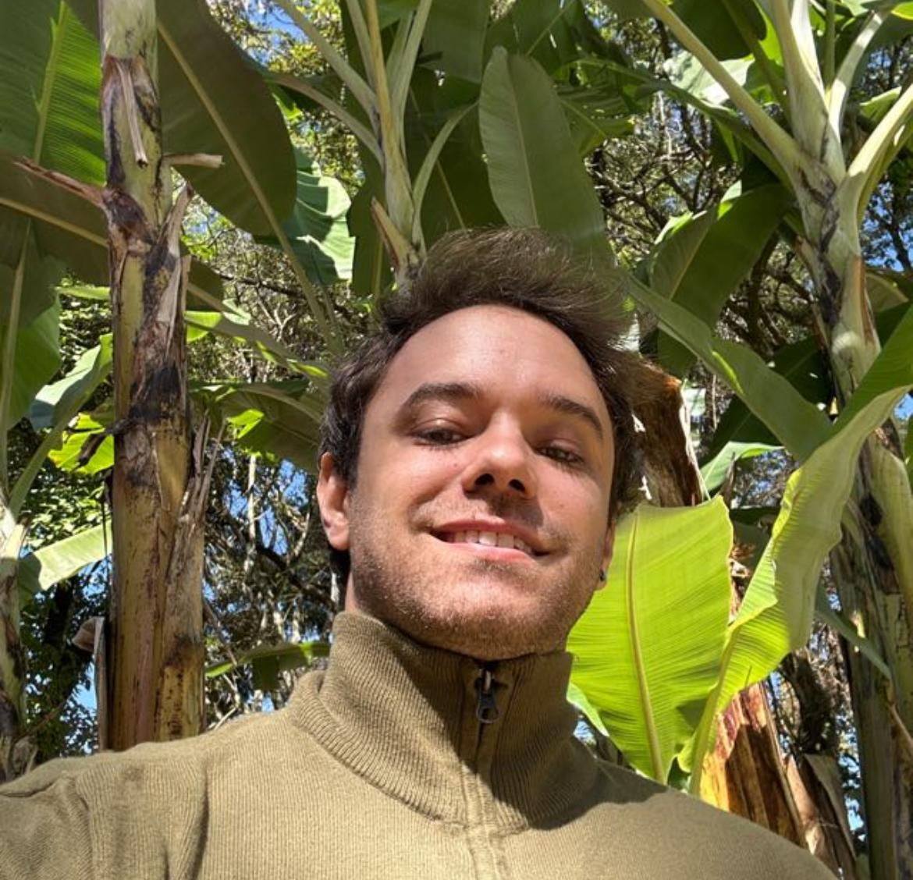

Daniel Dumont Marques

Summary
A chemical engineer who decided to venture into the world of web development.
Education
Bachelor of Science, Chemical Engineering - Pontifical Catholic University of Minas Gerais (2013-2019)
Work Experience
Airbnb Property Manager (2021-Present)
Responsabilities
- Managed multiple Airbnb properties, including creating and maintaining listings.
- Communicated with guests and ensured high standards of hospitality.
- Increased booking rates by optimizing property listings and improving guest experiences.
Skills Developed
- Customer service, content management, data analysis, and problem-solving.
Research Assistant - Pontifical Catholic University of Minas Gerais (2017-2019)
Participation in Conferences and Publications
2023 – January 2,
- Project: Influence of Meteorology on Fine Particles Concentration in an Urban Center in Southeast of Brazil
- Role: Co-Author
- Accomplishments: Published as a book chapter
- Link: Read the article
2020 – September 7 to 11, 23rd COBEC
- Validation of a Mathematical Model for Membrane Distillation
- Role: First Author
- Accomplishments: Article approved and published
- Link: Read the article
2018 – October, 3rd CIPUC (16-18 October)
- Project: Proposal of a Methodology for Characterizing the Gaseous Effluent Released During Beer Fermentation
- Role: First Author
- Accomplishments: Article approved for publication and oral presentation on Octomber 17
- Links: Read the article (page 227)
2018 – November 29 to December 1, 2nd CERVECON
- Project: Study of a Methodology for Characterizing Gases Produced by Fermentation During the Beer Brewing Process
- Co-Author
- Accomplishments: Article approved for publication and oral presentation on Octomber 17
- Note: The journal ceased to exist during the pandemic, but the publication is certified
- Certification: Available in certifications topic
Scientific Initiation
2019 – 7 months, Volunteer
- Project: Study on the Removal of Micropollutants Present in Sewage Using EGSB Reactor Combined with Membranes
2019 – 3 months, Volunteer
- Project: Study on the Removal of Micropollutants Present in Sewage Using Expanded Granular Sludge Bed Reactor Combined with Membranes
Teaching Assistant (Monitor) - Pontifical Catholic University of Minas Gerais (2018-2019)
Subjects:
- Process Modeling and Simulation
- Mass Transfer
- Chemical Thermodinamics
Responsabilities:
- Assisted professors in preparing and delivering lectures.
- Conducted review sessions and provided tutoring for students.
Skills Developed
- Enhanced communication and teaching abilities.
- Strengthened understanding of complex chemical engineering concepts.
- Developed strong organizational and time-management skills.
Additional Coursework
Isolated Courses
First Semester of 2020
- Wastewater Treatment I
- Statistical Treatment of Environmental Data
2019 – March 25, Biosafety in Laboratory Course
- Hours: 4
- Description: Course offered by the Department of Sanitary and Environmental Engineering at the Federal University of Minas Gerais.
University Extension
Second Semester of 2018 (2 months)
- Volunteer Project: Production of Biodiesel from Animal Fat for Industrial Application
Skills
Languages
- Portuguese: Native
- English: Advanced
- Espanish: Intermediate
- German: Basic
Technical Skills
- Programming Languages: HTML, CSS, JavaScript, Python
- Software: MATLAB, Microsoft Office Suite (Excel, Word, PowerPoint), Google Workspace
- Web Development: Responsive Design, UI/UX Principles, Git/GitHub, Bootstrap
- Data Analysis: Excel (VBA, Macros, Power Query), Python (Pandas, NumPy)
- Engineering Tools: MATLAB, AutoCAD, Aspen HYSYS
Driving License
- Category B: Valid in Brazil (since 29/11/2014)
Awards and certifications
Scholarships and Honors
- Scientific Initiation Scholarship: Awarded by the Brazilian National Council for Scientific
and Technological Development (CNPq) for the 4th Brazilian Mathematics Olympiad for Public Schools in 2008, Belo Horizonte.
- Honorable Mention: Received at the 3rd Brazilian Mathematics Olympiad for Public Schools in 2007.
Professional Certifications
- Advanced Content Marketing Specialist: Rock Content University
- Inbound Marketing Specialist: Rock Content University
Competitions and Challenges
- Desafio Dashem7: Completed a dashboard creation challenge in 7 days using Excel, June 21, 2024
- Intensivão Método 3D no Excel - Vendas: Completed an intensive Excel course focused on sales, June 24, 2024